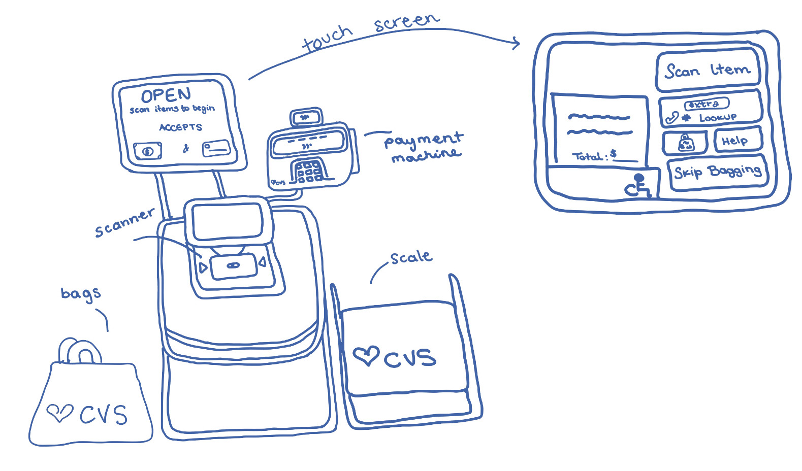
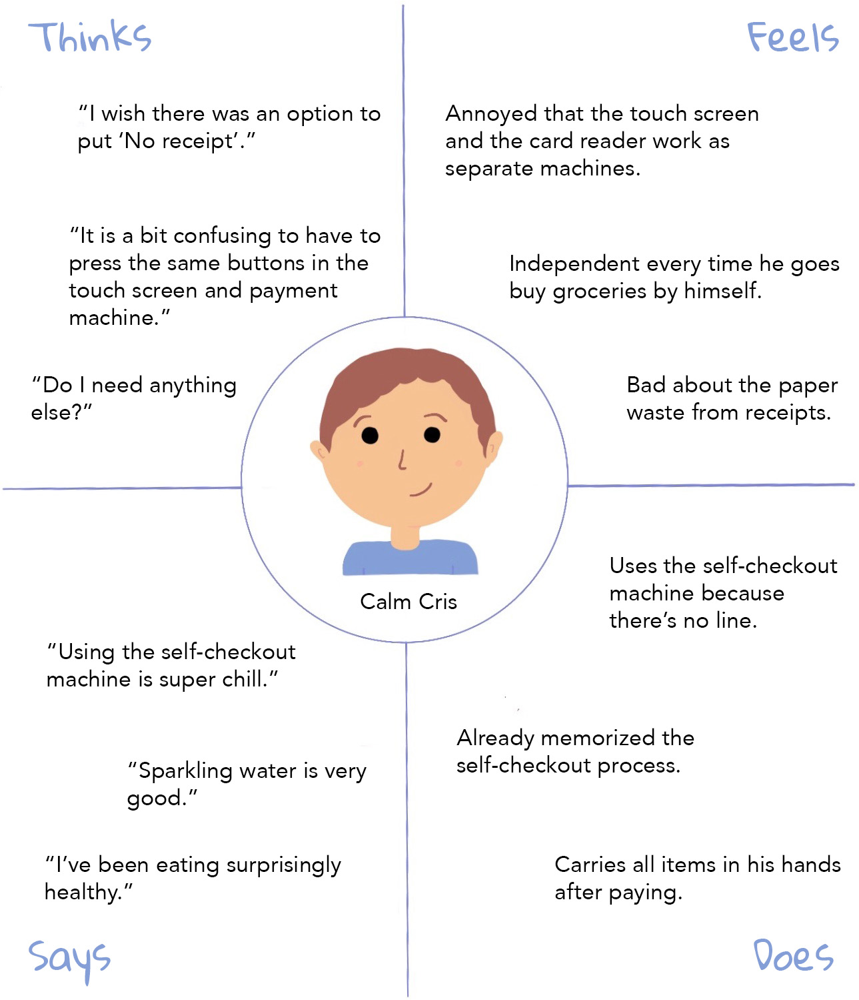
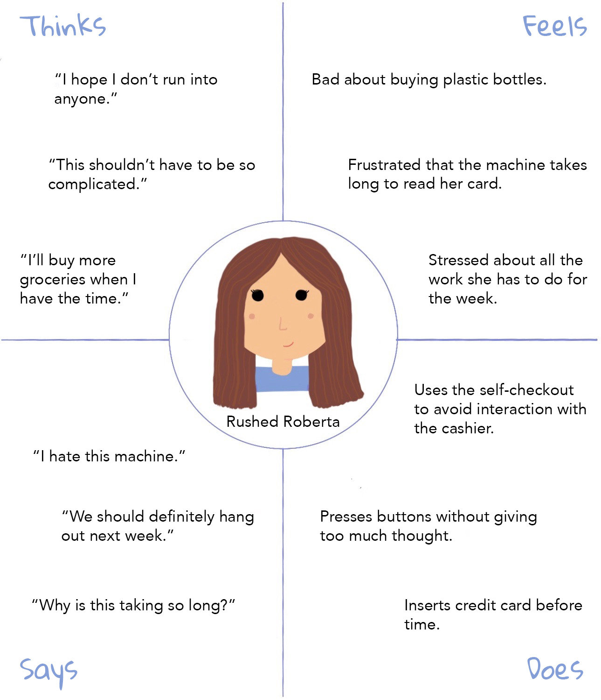
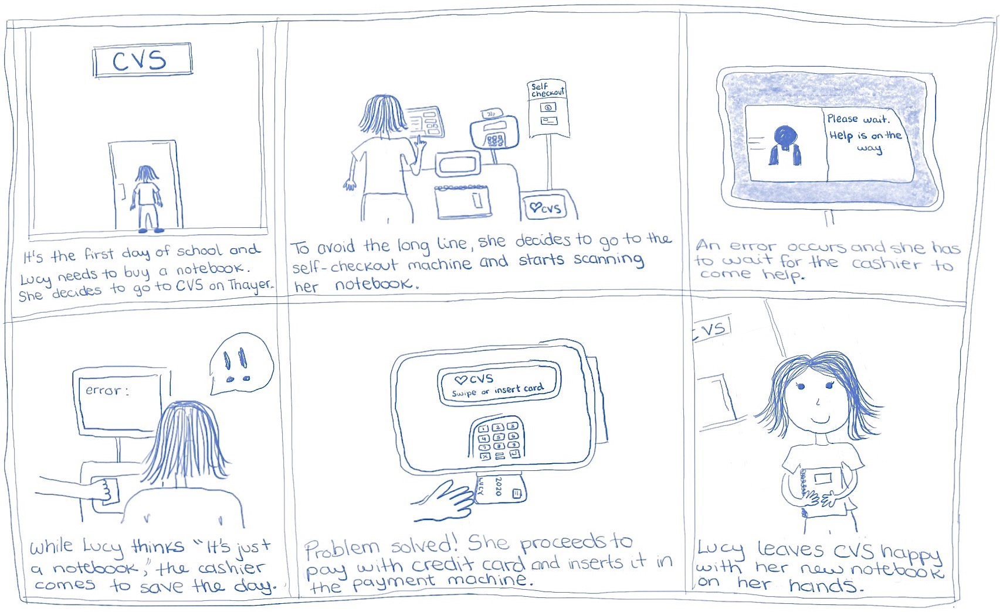

Personas & Storyboarding
Context
In this project for CSCI 1300: User Interfaces and User Experience, we were asked to observe
real users interacting with a simple interface, interview these individuals about their
experiences, and create Personas based on them. I chose the CVS self-checkout machine as my
interface.
Description
CVS Pharmacies have self-checkout machines for users who want to avoid long lines when paying
and, during the COVID pandemic, to help people keep their distance. The self-checkout machine
consists of a touch screen that walks the user through the steps for scanning and paying for
their items, a barcode scanner, a bagging area, a scale to place items after scanning, and a
payment machine.

User Observations
Of the three Brown students I observed, two experienced some minor complications when using
the self-checkout machine. The machine had troubles processing an item purchased by the
first user, so an employee had to come to assist. The second user inserted a credit card
before time, so the machine took a while to process the payment. The users verbally expressed
their unsatisfaction with the extended checkout process. The other user was able to use the
machine effectively, seeming to know exactly what to do in each step and using it without
complications.
Interviews
- If there is no line, which checkout methodology do you prefer, self-checkout or assisted?
- Why?
- What is your ideal checkout process?
- Do you like privacy when purchasing items?
- What is the first word that comes to your mind when you think about the CVS self-checkout machine?
- Did you encounter any challenges during the self-checkout process?
- Have you used this machine before?
- Will you use it again?
The interviewed users prefer to use the self-checkout machine because most of the time, it is faster than
going to the cashier, it is more private, and they don’t have to interact with anyone else. They usually
have a pleasant experience using these interface, although sometimes it has glitches and
requires assistance from an employee. Their ideal checkout machine would scan all items properly, read
their cards immediately, and have the option to select “No receipt.”
Empathy Maps & Personas

Cris
Is a sophomore at Brown. He likes studying
during the day to see his friends at night. Cris likes efficiency but doesn't get stressed easily
if things don't go his way. He normally uses the self-checkout machine in CVS to skip the line.
Now, he's finishing the checkout process by pressing "Proceed to Pay", but he is confused on which
buttons to press because both the payment machine and the touch screen are
waiting for a response. As many frequent users of the self-checkout machine, Cris navigates the
interface with ease but gets a little confused when it comes to paying. He also doesn't grab
the receipt and would prefer if the machine didn't print them.

Roberta
Is a Brown University junior taking 5 classes. She always wants to do things as fast
as possible to be able to keep up with her busy lifestyle. Roberta uses the self-checkout machine
to save time and go back to work ASAP. She's trying to checkout as fast as possible, so she keeps
pressing the buttons without thinking too much. She rushes to insert her credit card before the
machine was ready, so she had to go back to the touch screen until the machine was ready for paying.
As many users of the self-checkout machine, Roberta wants to make the process as efficient as possible,
but making little mistakes can actually make the process longer.
Storyboard for Lucy, Another College Student in a Rush

Conclusion
Throughout these observations and interviews, I was able to get a better understanding of some students'
general feelings towards the self-checkout process at CVS. These users prefer to do their own checkout,
although sometimes the machines have glitches that can complicate or extend the process. It was helpful
to design mental maps to better engage with the users feelings and reactions to certain circumstances.